Lecture 5: Multiple Regression and Feature Engineering
MSE 125 — Applied Statistics
Monday, April 13, 2026
how much is a bathroom worth?
a host has a question
an Airbnb host is adding a second bathroom
how much more should they charge per night?
chapter 4’s model doesn’t know bathrooms exist
today
- multiple regression
- one-hot encoding
- feature engineering
- diagnostics
multiple regression with numeric features
adding bathrooms
chapter 4: \(\widehat{\text{price}} = 57 + 66 \times \text{bedrooms}\)
add bathrooms:
\[\widehat{\text{price}} = 27 + 58 \times \text{bedrooms} + 34 \times \text{bathrooms}\]
a 2BR / 1BA listing: \(27 + 58(2) + 34(1) = \$177\)
a 2BR / 2BA listing: \(27 + 58(2) + 34(2) = \$211\)
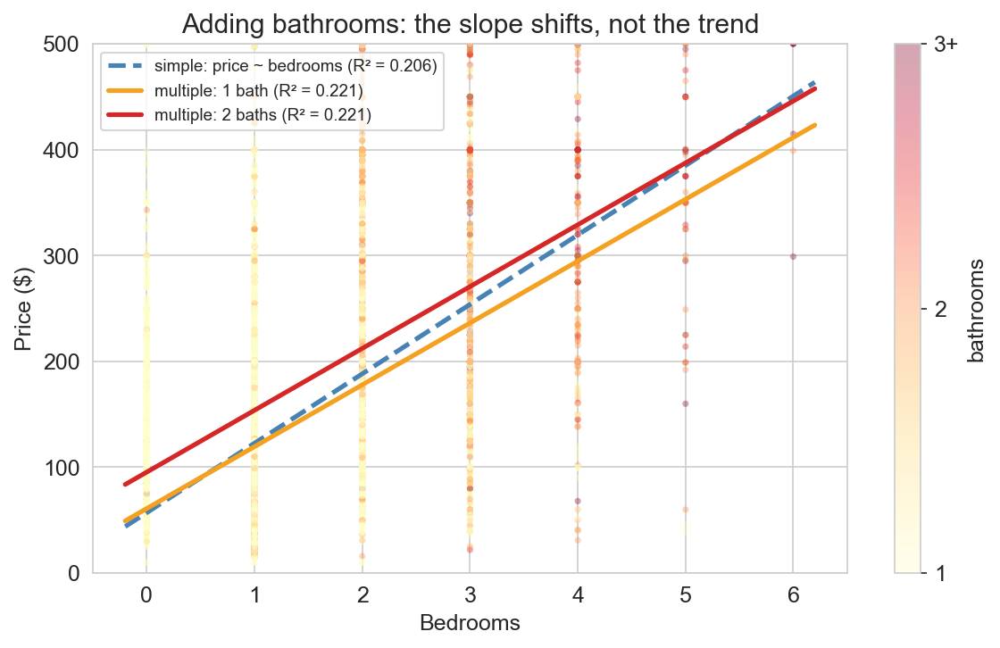
the feature matrix
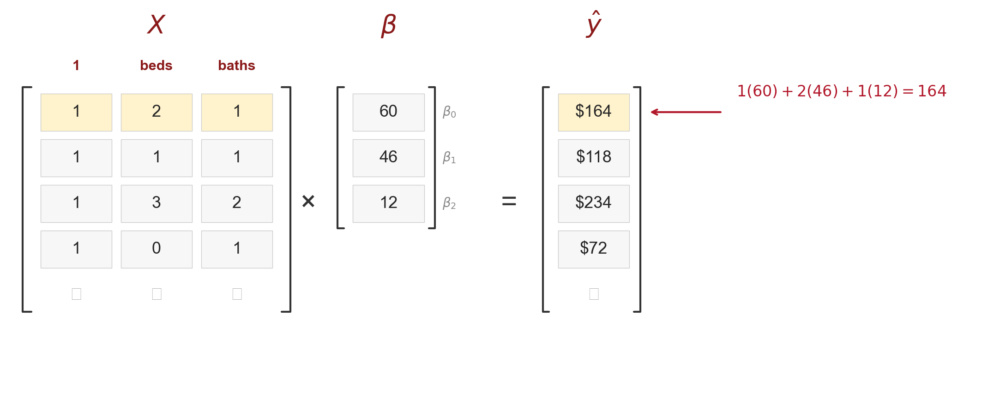
- each row of \(X\) = one listing
- each column = one feature (plus a column of ones)
- \(\widehat{y} = X\beta\) computes all predictions at once
the span grows with more features
\[\text{span}(X) = \{X\beta : \beta \in \mathbb{R}^p\}\]
the set of all possible predictions · the span of the columns of \(X\)
- 1 feature + intercept: 2D plane in \(\mathbb{R}^n\)
- 2 features + intercept: 3D subspace
- more columns → bigger span → closer projection
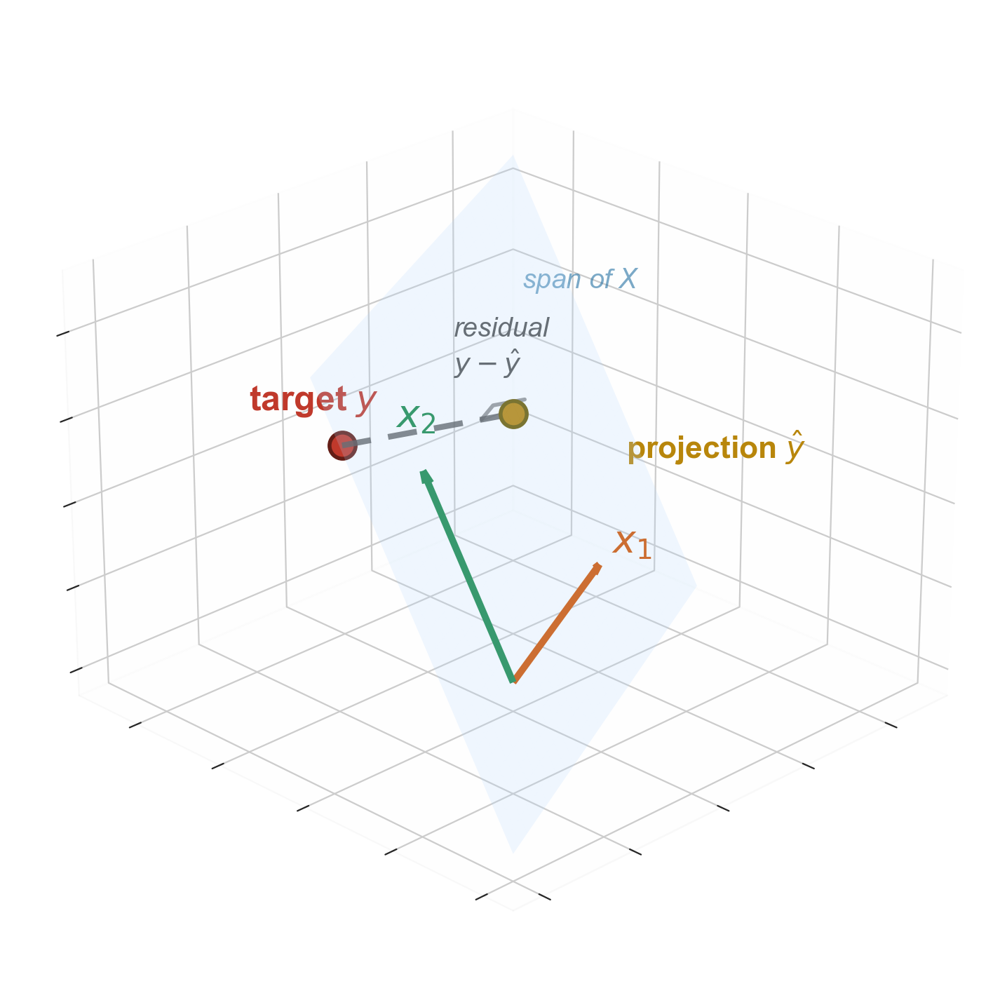
training R² can only go up
adding a feature never decreases training \(R^2\)
- new column → span grows (or stays)
- closer projection → higher \(R^2\)
- \(R^2_{\text{train}}\) is monotonic in # features
danger: \(R^2\) rewards you for adding noise
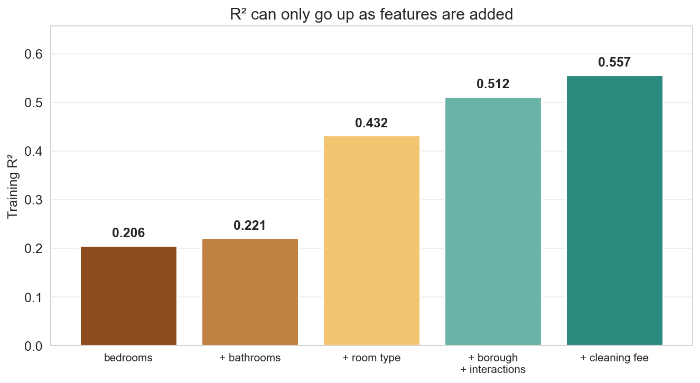
the normal equations
residual orthogonal to every feature column:
\[X^T \epsilon = 0 \quad \text{where } \epsilon = y - X\beta\]
rearrange:
\[X^T X \beta = X^T y\]
\[\widehat{\beta} = (X^T X)^{-1} X^T y\]
closed-form solution for the least-squares coefficients
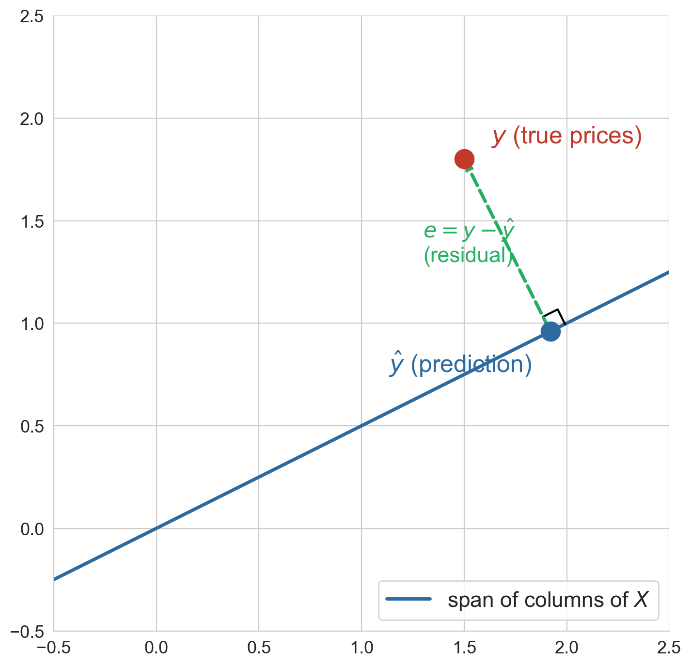
normal equations: code
[26.66 58.42 34.38]np.linalg.solve(A, b)— don’t invert; factor and solve- matches
LinearRegression().fit(...)exactly
what does the coefficient mean?
\[\widehat{\text{price}} = 27 + \mathbf{58} \times \text{bedrooms}\] \[+ \; 34 \times \text{bathrooms}\]
coefficient = association holding bathrooms constant
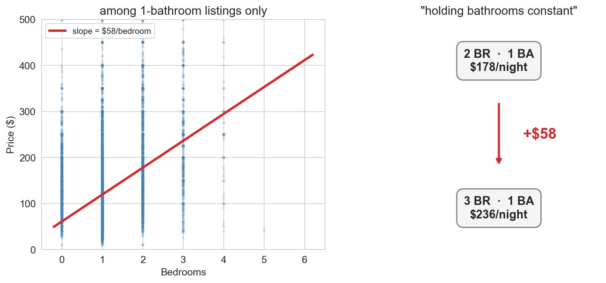
simple vs multiple
| model | bedrooms coef |
|---|---|
| bedrooms only | $66 |
| + bathrooms | $58 |
bathrooms coefficient: $34
the bedrooms coefficient dropped $8 — why?
why did the bedrooms coefficient drop from $66 to $58 when we added bathrooms?
- think for 30 seconds
- turn to your neighbor for 90 seconds
- we’ll collect answers
if stuck: think about what a 3-bedroom apartment usually has
bedrooms and bathrooms travel together
simple regression on bedrooms alone absorbed part of the bathrooms signal
multiple regression disentangles them by holding each constant
these coefficients measure association, not causation
the word for this: confounding (→ Ch 18)
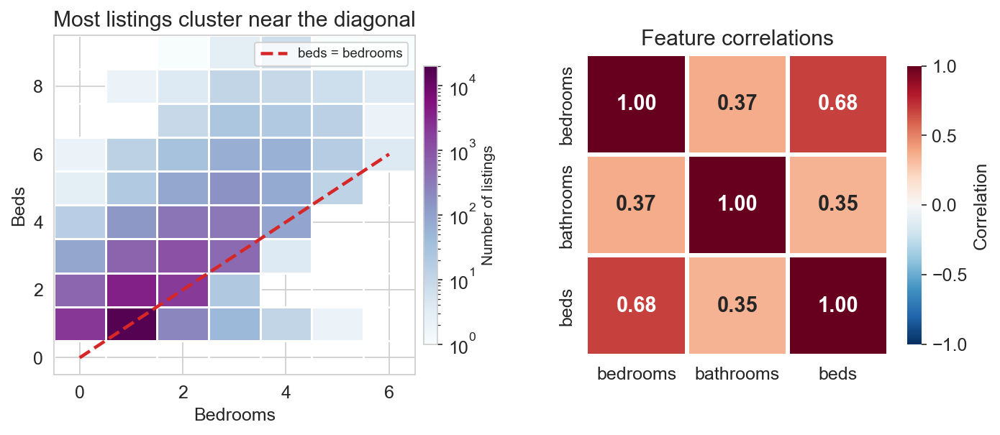
how do you put a string into a matrix?
the problem
you cannot multiply “Entire home/apt” by \(\beta\)
regression needs numbers
how would you convert room type to numbers for regression?
- 60 seconds: think — what rule would you use?
- 90 seconds: share with a neighbor
- what does the regression do with your numbers?
if stuck: what about entire home = 2, private room = 1, shared room = 0?
one-hot encoding
one binary (0/1) column per category
| entire home | private room | shared room |
|---|---|---|
| 1 | 0 | 0 |
| 0 | 1 | 0 |
| 1 | 0 | 0 |
| 0 | 0 | 1 |
each row has exactly one 1 — the category it belongs to
the dummy variable trap
three dummy columns sum to the all-ones vector
but the intercept column is the all-ones vector
- let \(e\) = entire, \(p\) = private, \(s\) = shared
- the columns are linearly dependent: \(e + p + s = \mathbf{1}\)
- \(X^TX\) is singular — no unique solution
reference level
Reference level
drop one category; its baseline is absorbed into the intercept. every other coefficient measures a difference from the reference.
Q: if we dropped “Shared room” instead, which coefficients would change?
A: all of them — the baseline shifts
room type alone
Intercept (Entire home/apt baseline): $186
room_type_Private room: −$108
room_type_Shared room: −$129- intercept ≈ mean price of entire homes
- private room: $108 less than an entire home
- shared room: $129 less than an entire home
the full model
price ~ bedrooms + bathrooms + room type
Intercept: $80.79
bedrooms: +$43.67
bathrooms: +$43.13
room_type_Private room: −$95.77
room_type_Shared room: −$119.77
R² = 0.432how much is a bathroom worth?
about $43 more per night
holding bedrooms and room type constant
coefficients, visualized
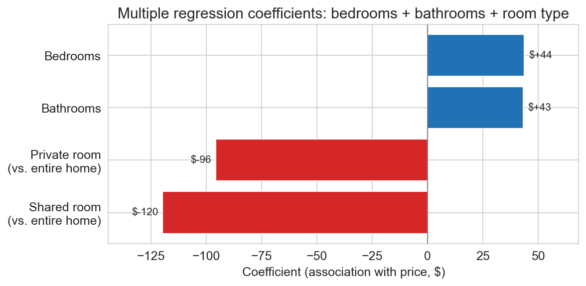
negative bars = discounts from the entire-home baseline · intercept = $81 (the entire-home baseline)
Q: compute the predicted price of a private room, 2 bedrooms, 1 bathroom
\(81 + 44(2) + 43(1) - 96 = \$116\)
linear in parameters, not in features
the big idea
every model we’ve fit: \(\widehat{y} = X\beta\)
- linear in \(\beta\) — yes, always
- linear in \(x\) — not required
the columns of \(X\) can be anything we compute from the raw data
interaction terms
is an extra bedroom associated with the same price change in Manhattan and the Bronx?
\[\widehat{y} = \beta_0 + \beta_1 \text{beds} + \beta_2 \mathbf{1}_{\text{Manh}} + \beta_3 (\text{beds} \times \mathbf{1}_{\text{Manh}})\]
where \(\mathbf{1}_{\text{Manh}} = 1\) if Manhattan, \(0\) otherwise
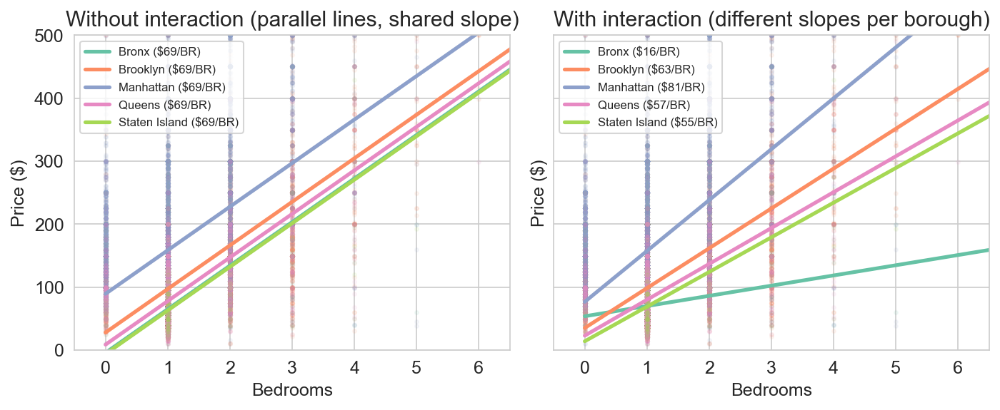
left: without \(\beta_3\) — parallel lines · right: with \(\beta_3\) — slopes differ by borough
borough-specific bedroom slopes
| borough | $/bedroom |
|---|---|
| Manhattan | $81 |
| Brooklyn | $63 |
| Queens | $57 |
| Staten Island | $55 |
| Bronx | $16 |
a bedroom in Manhattan is associated with ~5× more than a bedroom in the Bronx
missing values as features
- ~19.6% of listings leave the cleaning fee blank
- missing fee = host bundles cost, skipped field, or expects guest to tidy up
- impute with zero — missing contribution reads directly as \(\hat{\beta}_{\text{missing}}\)
- indicator column
fee_missingflags imputed rows
the missing indicator earns its place
Q: does the indicator column add anything beyond the imputed fee?
baseline (no fee): R² = 0.4322
+ imputed cleaning fee: R² = 0.4845
+ imputed fee + fee_missing: R² = 0.4982cleaning_fee_imputed: $0.80 per $1 of fee
fee_missing: +$35.71a blank fee carries its own price signal — missingness is information
a hint hiding in the interaction coefficients
dollars vary · percentages cluster
| borough | $/bedroom | % per bedroom |
|---|---|---|
| Manhattan | $81 | 51% |
| Brooklyn | $63 | 64% |
| Queens | $57 | 71% |
| Staten Island | $55 | 80% |
| Bronx | $16 | 23% |
four of five boroughs cluster 51–80% per bedroom · Bronx is the outlier
if one shared percentage replaces five dollar slopes, one coefficient does the work of five
a second clue: the fat right tail
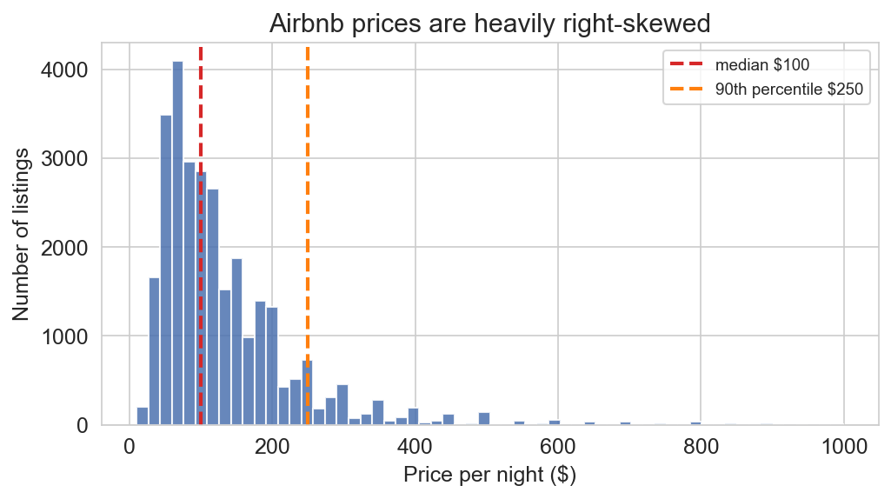
median $100 · 90th percentile $250 · tail runs to $999
the top 5% of listings hold nearly half the level model’s squared error
a $50 miss on $100 (50% off) ≡ a $50 miss on $500 (10% off) — squared dollars can’t tell them apart
a bedroom is worth more in a luxury apartment
linear model: each bedroom adds a fixed dollar amount
- adding a bedroom to a luxury loft is worth more dollars
- adding a bedroom to a rundown studio is worth fewer dollars
- few large Airbnbs exist — they command a disproportionate premium
prices grow multiplicatively, not additively
log transform straightens the curve
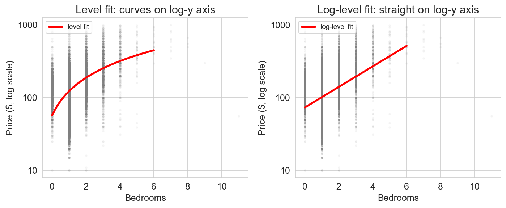
ax.set_yscale('log') — log y-axis, same data. level fit curves; log-level fit is straight.
multiplicative interpretation
\[e^{0.33} \approx 1.38\]
each bedroom multiplies price by ~1.38 — about 38% more per bedroom
same multiplier, different dollars
log model with borough: shared multiplier per bedroom is about 1.42 (about 42%)
apply that multiplier to each borough’s base:
| borough | $/bedroom (0→1) |
|---|---|
| Manhattan | $39 |
| Brooklyn | $25 |
| Queens | $21 |
| Staten Island | $19 |
| Bronx | $18 |
same proportional jump · bigger base → bigger dollars
honest limit: the Bronx is an outlier we accept — the price of simplification
log on x: when \(x\) spans orders of magnitude
\[y \sim \log(x) \quad\Longrightarrow\quad \text{a **1% increase** in } x \text{ adds about } \tfrac{\beta_1}{100} \text{ to } y\]
use it when \(x\) ranges over orders of magnitude:
- square footage (200 vs 2,000)
- income ($30k vs $300k)
- city population (10k vs 10M)
a unit change in income means something totally different at the bottom and top — a percentage change is the natural unit
elasticity: \(\log(y) \sim \log(x)\)
Elasticity
when both \(y\) and \(x\) are on the log scale, \(\beta_1\) is the percentage change in \(y\) from a 1% change in \(x\).
\[\log(\text{price}) \sim \log(\text{accommodates}) \quad\Longrightarrow\quad \beta_1 \approx 0.66\]
a 10% larger listing is associated with about 6.6% more price
elasticities are dimensionless — compare effects across features on wildly different scales
the four combinations
| model | \(\beta_1\) means | example |
|---|---|---|
| \(y \sim x\) | unit change in \(x\) → \(\beta_1\) change in \(y\) | each bed adds $66 |
| \(\log y \sim x\) | unit change in \(x\) → multiply \(y\) by \(e^{\beta_1}\) | each bed × 1.38 |
| \(y \sim \log x\) | 1% change in \(x\) → \(\beta_1/100\) change in \(y\) | 10% sqft → $5 more |
| \(\log y \sim \log x\) | 1% change in \(x\) → \(\beta_1\)% change in \(y\) | elasticity (e.g. 0.66) |
when should the response be on a log scale?
for which of these would you use log(y)?
vote on each:
- housing prices
- test scores (0–100)
- household incomes
- body temperatures
- company revenues
diagnostics: how you catch your own mistakes
adjusted R²
training \(R^2\) never decreases with more features — even random noise
penalize for the number of features:
\[R^2_{\text{adj}} = 1 - \frac{(1 - R^2)(n - 1)}{n - p - 1}\]
where \(n\) = sample size, \(p\) = number of features
- useless feature ⇒ \(p\) grows, \(R^2\) barely moves
- adjusted \(R^2\) drops
multicollinearity
beds and bedrooms are nearly the same feature · correlation ≈ 0.68
| without beds | with beds | |
|---|---|---|
| bedrooms | +58.43 | +28.48 |
| bathrooms | +34.37 | +25.52 |
| beds | — | +30.98 |
| \(R^2\) | 0.2215 | 0.2755 |
bedrooms coefficient cut in half from $58 to $28 — beds absorbed the signal
symptoms of multicollinearity
- coefficients become large and unstable
- small changes in data → big swings in coefficients
- opposite signs, blown-up magnitudes
- \((X^TX)^{-1}\) is ill-conditioned: amplifies noise
predictions may still be fine — individual coefficients become uninterpretable
residual diagnostic vocabulary
residual = observed − predicted: \(\epsilon_i = y_i - \hat{y}_i\)
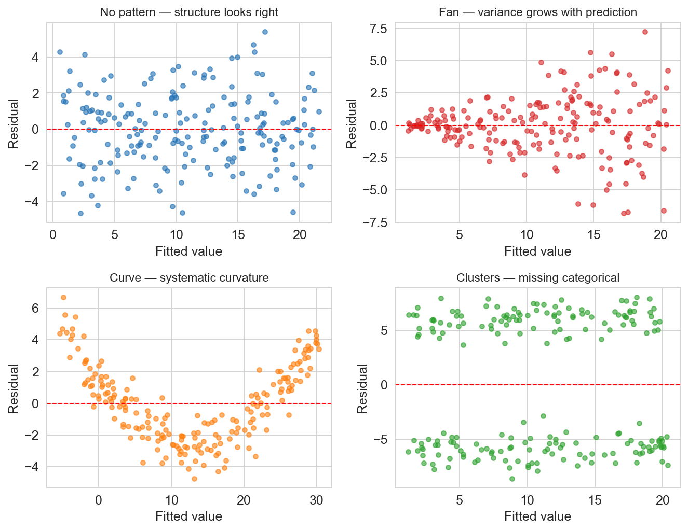
- fan → missing variance-stabilizing transform (often log)
- curve → missing polynomial or log feature
- clusters → missing categorical feature
Airbnb residuals: level vs log
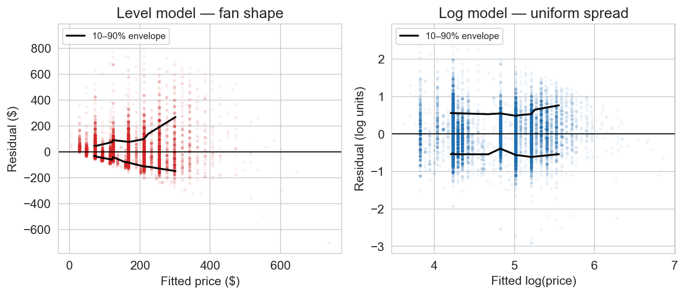
level model: fan from our vocabulary · spread grows with predicted price
log model: flat band · the fan is gone
what would you do next?
given the fan in the level-model residuals — fit the log model, or stay with level?
- 60 seconds: pick a side
- 90 seconds: share with a neighbor — what would you tell a host?
key takeaways
- multiple regression: more columns in \(X\), same projection math
- normal equations: \(X^TX\beta = X^Ty\)
- holding constant: coefficients are partial associations
- one-hot encoding: categories as binary columns with a reference level
- feature engineering: interactions, indicators, logs — all linear in \(\beta\)
- diagnostics: residual plots catch what \(R^2\) misses
what we still can’t answer
- is the $43 bathroom coefficient real or noise? → Chapter 12 (inference)
- does this model generalize to new data? → Chapter 6 (validation)
- does a bathroom cause higher prices? → Chapter 18 (causation)
we can fit models. next: how to trust them.
logistics
- quiz 2 — this Wednesday (Apr 15) in class
- HW 2 — due Friday Apr 24
- read Chapter 6 (validation) before Wednesday
one-minute feedback
- what was the most useful thing you learned today?
- what was the most confusing?